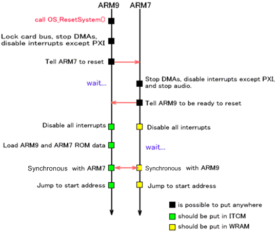
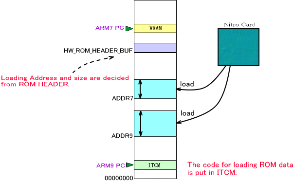
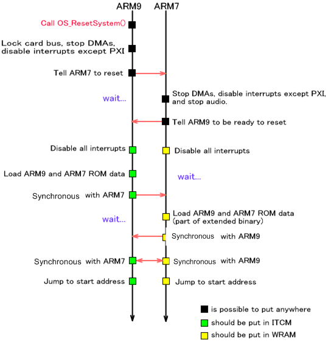

The TWL-SDK provides a software reset system. This system loads the ROM data from the Game Card into main memory and moves the Program Counter register to the appropriate address so the program always starts at the beginning.
The OS_InitReset function must be called before performing a software reset. OS_InitReset is called internally by OS_Init, so you do not need to call it in the application.
A software reset can be executed only by an ARM9 processor. Only the ARM9 can issue a reset command, which will in turn call OS_ResetSystem. The ARM7 continues to operate until the software reset instruction comes from the ARM9. When a reset instruction is sent via PXI (communicated as a PXI interrupt), the ARM7 resets.
Software reset is a feature designed to reload ROM data from a Game Card ROM. This feature is valid only for Game Card applications. Accordingly, a NAND application or a multiboot child cannot call this function to perform a software reset. For NAND applications, use the OS_RebootSystem function to execute a hardware reset. The OS_IsRebooted function determines whether the system has been restarted using the OS_RebootSystem function or directly from the system menu.
For more information on hardware resets, see Hardware Reset and Shutdown: Overview in the PM library. Because several functions that use hardware reset can be found in the OS category, see also Application Jumps Using Hardware Reset below.
NITRO ModeWhen the ARM9 calls the OS_ResetSystem function, both the ARM9 and ARM7 processors will operate as follows.

The ARM9 waits for the card bus to unlock and immediately locks it. Next, all DMA tasks are ended. Then PXI-communication interrupts (and only these interrupts) are enabled in order to receive communications from the ARM7. Other interrupts are disabled. Finally, a reset notification is posted to the ARM7.
On the ARM7 side, when the reset notification comes from the ARM9, all DMA tasks are ended, and PXI-communication interrupts (and only these interrupts) are enabled for receiving communications from the ARM9. Also, the stop command is communicated to the Sound library.
In the explanations of these subsequent steps, all operations take place in ITCM on the ARM9, and in WRAM on the ARM7.
All interrupts are disabled in both the ARM7 and the ARM9. The ARM9 then reads ROM data from the Game Card in accordance with the ROM header information stored in the shared area of main memory.

Once synchronized after the data have been read, the ARM7 and the ARM9 both act to clear memory and registers.
The starting address is set in the Program Counter (PC) according to the ROM header information.
TWL ModeWhen the ARM9 calls the OS_ResetSystem function, both the ARM9 and ARM7 processors will operate as follows.

This differs from NITRO mode in that ROM data is reloaded and new DMAs will also be stopped when DMAs are cleared.
TWL mode also uses the ARM7 to reload ROM data, unlike NITRO mode. This operation loads the extended portion of ROM data from where it is temporarily stored in the main memory.
The Software Reset System has a u32 value named reset parameter. It can be used to determine whether the current program is running because the power has been turned on or because the program was restarted.
This Reset Parameter is obtained by OS_GetResetParameter. The value of the Reset Parameter is 0 after the power is turned on, but once the OS_ResetSystem function is called, it takes the value of the function's argument. If resets are performed multiple times, the Reset Parameter holds the value of the argument from OS_ResetSystem most recently called.
The Reset Parameter is stored in a part of the shared region of main memory. This part is not cleared during the reset process, so the value of the Reset Parameter can be passed to programs after the reset.
The PM library function PM_ForceToResetHardware executes hardware resets, so see Hardware Reset and Shutdown (Overview) in the PM library.
The OS_JumpToSystemMenu function executes a jump to the system menu when the hardware is reset. The OS_JumpToWirelessSetting function, for jumping to system wireless settings, the OS_JumpToInternetSetting function, for jumping to system Internet settings, and the OS_JumpToEULAViewer function, for jumping to the system's Internet usage guidelines, are also provided.
2009/07/02 Revised Description because support was added for software reset also in TWL mode.
2009/06/08 Explained that this function operates only in NITRO mode.
2009/06/03 Revised the text to reflect that calling OS_Init is now required.
2008/09/06 Added figures for TWL mode.
2005/03/08 Standardized the Japanese term for interrupt.
2004/12/13 Revised terminology and word endings.
2004/11/02 Initial version.
CONFIDENTIAL